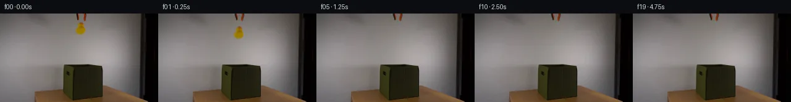

![首帧]()

Round 00
2026-11-05T01:44:34.202906+00:00像素候选变化代码 +152/−0inspection 更新
pixels 3a1668f2fa7b5910 · code 64715873a059c2e5
查看本轮 generate.py 真实 diff
--- previous/generate.py
+++ current/generate.py
@@ -0,0 +1,152 @@
+"""Local photographic pixel animation; no external sources or rendering engines."""
+from pathlib import Path
+import json
+import numpy as np
+from PIL import Image, ImageDraw
+import cv2
+from artifact_io import save
+
+ROOT = Path(__file__).resolve().parent
+W, H, N, FPS = 256, 144, 20, 4
+source = np.asarray(Image.open(ROOT / 'first_frame.png').convert('RGB'))
+assert source.shape == (H, W, 3)
+photo = source.astype(np.float32)
+yy, xx = np.mgrid[:H, :W].astype(np.float32)
+
+
+def wall_fit(rect, excluded):
+ """Estimate the local smooth wall with a cubic polynomial of nearby pixels."""
+ x0, y0, x1, y1 = rect
+ good = (xx >= x0) & (xx < x1) & (yy >= y0) & (yy < y1)
+ for a, b, c, d in excluded:
+ good &= ~((xx >= a) & (xx < c) & (yy >= b) & (yy < d))
+ u = (xx - (x0+x1)/2) / 25
+ v = (yy - (y0+y1)/2) / 25
+ basis = np.stack([np.ones_like(u), u, v, u*u, u*v, v*v,
+ u**3, u*u*v, u*v*v, v**3], axis=-1)
+ coeff = np.linalg.lstsq(basis[good], photo[good], rcond=None)[0]
+ return np.clip(basis @ coeff, 0, 255).astype(np.float32)
+
+
+def feather_rectangle(box):
+ x0, y0, x1, y1 = box
+ # One-pixel feather outside a rectangle containing all object edge blur.
+ return np.clip(np.minimum.reduce([xx-x0+1, x1-xx, yy-y0+1, y1-yy]), 0, 1)
+
+
+duck_wall = wall_fit((110, 12, 151, 44), [(121, 12, 139, 36), (133, 12, 142, 15)])
+duck_region = feather_rectangle((121, 13, 139, 36))
+# A yellow rubber object has almost zero blue in its opaque interior. Its
+# photographed soft edge is estimated from blue loss against the neutral wall.
+a = np.clip((duck_wall[..., 2] - photo[..., 2]) / np.maximum(duck_wall[..., 2], 1), 0, 1)
+chroma = (photo[..., 0]-photo[..., 2]) - (duck_wall[..., 0]-duck_wall[..., 2])
+a *= (chroma > 3.0) * duck_region
+# Suppress wall noise while retaining the original lens-softened silhouette.
+a[a < .012] = 0
+# The foreground is unpremultiplied only to recover the yellow edge color.
+duck_rgb = np.clip((photo - duck_wall*(1-a[..., None])) / np.maximum(a[..., None], .001), 0, 255)
+duck_layer = np.dstack([duck_rgb*a[..., None], a]).astype(np.float32)
+background = photo*(1-duck_region[..., None]) + duck_wall*duck_region[..., None]
+
+# Two tool fingers are independently matted from their local neutral wall.
+tool_wall = wall_fit((111, 0, 152, 17), [(122, 0, 130, 13), (133, 0, 142, 15), (123, 12, 139, 17)])
+fingers = []
+for box, pivot, final_angle in [((122, 0, 130, 13), (126, -3), -5.5),
+ ((133, 0, 142, 14), (137, -3), 5.5)]:
+ region = feather_rectangle(box)
+ # Dark metal and orange coating both absorb blue strongly.
+ alpha = np.clip((tool_wall[..., 2]-photo[..., 2])/np.maximum(tool_wall[..., 2], 1), 0, 1)
+ alpha *= region
+ alpha[alpha < .04] = 0
+ rgb = np.clip((photo-tool_wall*(1-alpha[..., None])) / np.maximum(alpha[..., None], .001), 0, 255)
+ fingers.append((np.dstack([rgb*alpha[..., None], alpha]).astype(np.float32), pivot, final_angle))
+ # All contaminated pixels, including the weak edge blur, are reconstructed.
+ background = background*(1-region[..., None]) + tool_wall*region[..., None]
+
+
+def warp_layer(layer, pivot, angle, dx=0, dy=0):
+ # cv2 positive angles turn counterclockwise in image coordinates.
+ matrix = cv2.getRotationMatrix2D(pivot, angle, 1)
+ matrix[:, 2] += (dx, dy)
+ return cv2.warpAffine(layer, matrix, (W, H), flags=cv2.INTER_LINEAR,
+ borderMode=cv2.BORDER_CONSTANT, borderValue=(0, 0, 0, 0))
+
+
+def over(base, layer):
+ return base*(1-layer[..., 3:4]) + layer[..., :3]
+
+
+# Photographed front lip and sides are foreground. The duck is behind this
+# edge as it falls, with a subpixel antialiased boundary at the upper lip.
+near_edge = 86.45 - .025*(xx-130)
+visible = 1-np.clip((yy-near_edge+.5), 0, 1)
+visible = np.where((xx >= 117) & (xx <= 166), visible, 1).astype(np.float32)
+
+frames = [source.copy()]
+trajectory = []
+for n in range(1, N):
… diff truncated; 65 more lines …